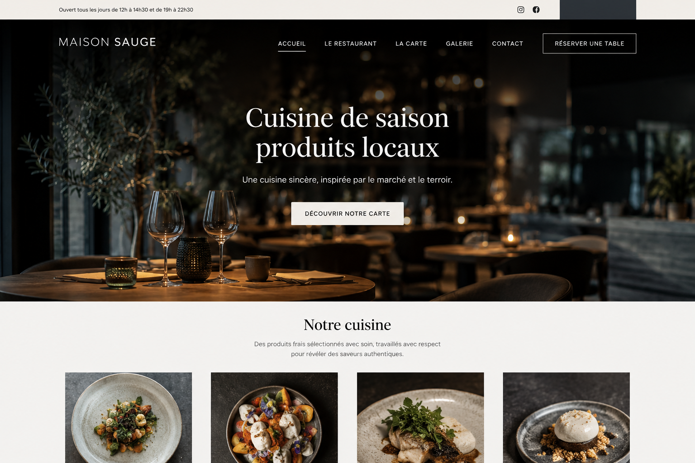
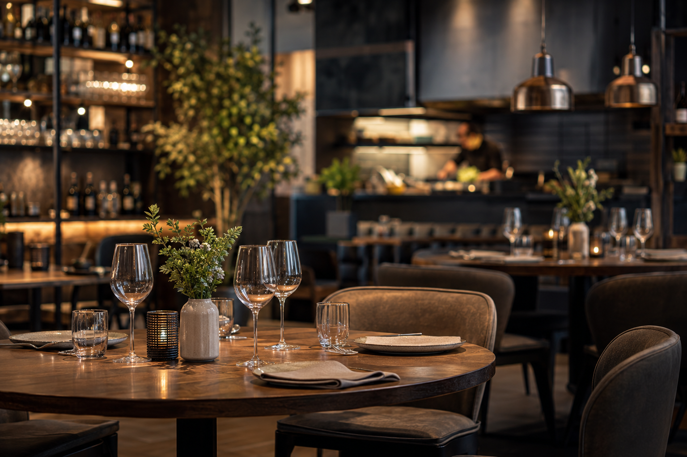

BISTRONOMIE · LYON

Un site qui ouvre l’appétit, raconte votre cuisine et transforme une envie en réservation.
Le menu, l’ambiance et la réservation réunis dans une expérience aussi soignée que votre service.
Ces maquettes de démonstration illustrent des univers possibles. Chaque projet réel est créé sur mesure.

Une fonctionnalité intégrée avec soin, sans complexité pour vos équipes.
Une fonctionnalité intégrée avec soin, sans complexité pour vos équipes.
Une fonctionnalité intégrée avec soin, sans complexité pour vos équipes.
Une fonctionnalité intégrée avec soin, sans complexité pour vos équipes.
Parlons de votre projet et imaginons une présence en ligne impossible à confondre avec une autre.
Démarrer mon projet ↗